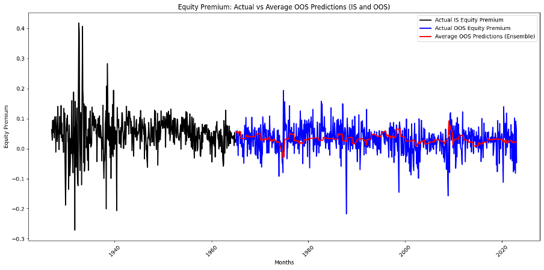
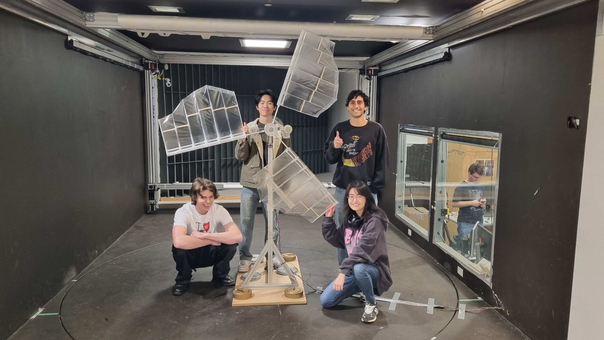

Welcome to my portfolio! Explore projects demonstrating my engineering expertise and dedication to continuous learning.
Spotify Song and Artist Recommender
A web application built with Streamlit and Spotipy, allowing users to search for songs and artists based on mood, popularity, and criteria. This project integrates with the Spotify API, demonstrating skills in Python, API integration, and UI development.
View on GitHub Live App (Limited Access)Honors Project: Brain MRI Implicit Harmonisation
This project focused on developing statistical and machine learning models to achieve implicit harmonisation of brain MRI data, addressing variability across multiple sites. The aim of this project was to improve functional MRI input data to improve the classification accuracy of detecting Autism Spectrum Disorder in patients. It showcases my skills in medical imaging, machine learning model evaluation and applying machine learning techniques to a new field, and application in real-world datasets.
Financial Machine Learning Replication Project
A replication project in financial machine learning papaer aimed at recreating an Out-of-Sample R² value, using neural networks for time-series financial data. This project introduced unique training-validation methods specific to financial data, furthering my skills in applying machine learning to finance. It was insightful using an increasing training set on time series data to make OOS monthly predictions. The financial data was extremely noisy and difficult to capture to a high standard. Seen below is the 3 layer ensemble neural network OOS predictions, with the results highlighting the difficulty of crafting a model which accounts for eradic variability.
Capstone Project: Wind Turbine Design and Testing
As part of a four-member team, I contributed to the design and testing of a wind turbine. We used Blade Element Momentum theory for airfoil selection and applied a genetic algorithm metaheuristic for optimal blade orientations and parameters. The turbine was built and tested across different wind speeds to validate performance, underscoring skills in team-based engineering and experimental validation. An image of my team and the wind turbine we built can be seen below:
